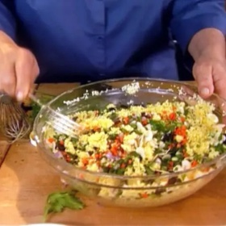

← All recipes
Curried Couscous

Servings: Yield: 6 servings · Prep: 20 min · Cook: 20 min
Ingredients
- 1 1/2 cups couscous
- 1 tablespoon unsalted butter
- 1 1/2 cups boiling water
- 1/4 cup plain yogurt
- 1/4 cup good olive oil
- 1 teaspoon white wine vinegar
- 1 teaspoon curry powder
- 1/4 teaspoon ground turmeric
- 1 1/2 teaspoons kosher salt
- 1 teaspoon freshly ground black pepper
- 1/2 cup small-diced carrots
- 1/2 cup minced fresh flat-leaf parsley
- 1/2 cup dried currants or raisins
- 1/4 cup blanched, sliced almonds
- 2 scallions, thinly sliced (white and green parts)
- 1/4 cup small-diced red onion
Directions
- Place the couscous in a medium bowl. Melt the butter in the boiling water and pour over the couscous. Cover tightly and allow the couscous to soak for 5 minutes. Fluff with a fork.
- Whisk together the yogurt, olive oil, vinegar, curry, turmeric, salt, and pepper. Pour over the fluffed couscous, and mix well with a fork. Add the carrots, parsley, currants, almonds, scallions, and red onions, mix well, and season to taste. Serve at room temperature.
Original source: foodnetwork.com